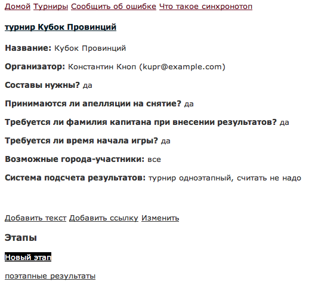
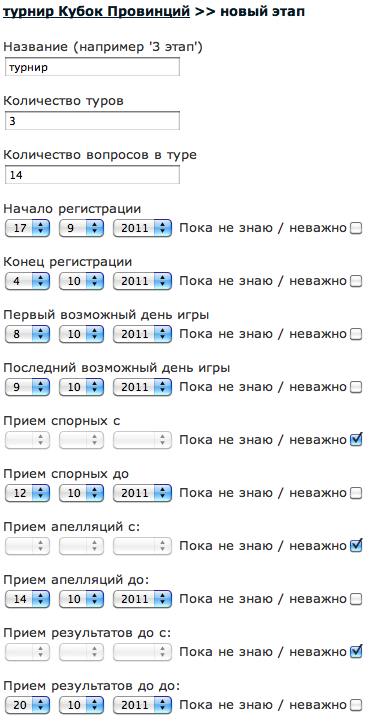
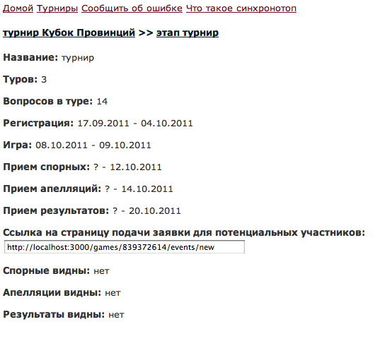

На странице турнира кликните на "новый этап". 
Откроется страница, где требуется внести параметры этапа. Если турнир одноэтапный, этап можно назвать просто "турнир". Далее необходимо внести количество туров и вопросов в туре, а также расписание турнира. Это расписание будет использоваться системой при приеме всевозможных данных от представителей: например если есть ограничение, до какого срока принимать апелляции - позже этого срока апелляцию чисто технически нельзя будет внести. Если вы хотите, чтобы соответствующего ограничения не было, выберите вариант "пока не знаю / неважно". Указав все параметры, нажмите на "сохранить". 
Настройки турнира потом можно менять, и система это учтет. Например если после окончания регистрации появились еще желающие, и вы хотите принять их заявку - измените "конец региатрации" не более позднюю дату - и заявку можно будет подать.
Этап, как и турнир, можно снабдить произвольным текстом или ссылкой.
Теперь настройки этапа соотвтствуют вашим потребностям. Кликните на странице турнира по свежесозданному этапу - откроются его параметры, в том числе "ссылка на страницу подачи заявки". Скопируйте эту ссылку в объвление о турнире - именно она нужна тем, кто будет регистрироваться. В объявлении имеет смысл напомнить, что тем, кто пока не зарегистрирован в "синхронотопе", надо это сделать. 
Назад